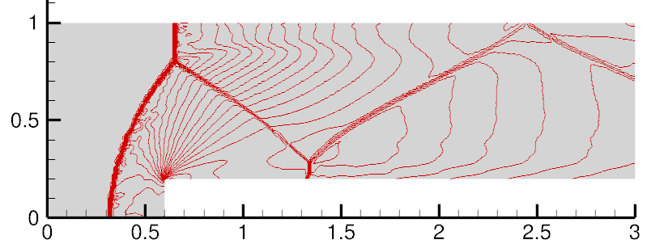

Spring 2023
In the age of digital technology and media, disinformation is rampant and research
groups are racing to solve the problem. Current research efforts on disinformation
are mainly focused on identifying or scoring the validity of media.
We intend to extend this existing research by using their open-source models designed to score media validity with a stream of social media post data.
From this, we can aggregate model results and apply them at a user level to score an account’s susceptibility to disinformation.
Spring 2023
Visualization Tool for ETF Portfolio Diversification Assessment

The project uses interactive visualizations to help users discover ETFs that meet their risk/return preferences
and make informed investment decisions. The tool also allows users to analyze their portfolio's performance,
diversification, and optimize their investment strategy using node diagrams, stacked bar charts, and plotted
performance and expense data.
Technologies: Python, Altair, D3, Tableau and Flask app.
Course: Data Visualisation.
Fall 2022
ML Based Flight Departure
Delay Prediction

This machine learning project experimented on various prediction models to solve the delayed flights business case scenario. The main question we will be answering is:
What customized features of machine learning pipelines best accurately predict delayed flights?
Technologies: Python, PySpark and Azure Databricks.
Course: Machine Learning at Scale.
Spring 2022
Statistical models to predict CO2 emission.
Forecast the evolution of CO2 concentration using statistical models (including ARIMA, SARIMA, polynomial…).
Technologies: R, Time series.
Course: Statistical Methods for Discrete Response, Time Series, and Panel Data.
Spring 2020
The project aims to study the effects of depressurization on the cabin of a commercial airliner using CFD simulations.
The simulations consider unsteady and compressible flow of air, assuming it to be an ideal gas. Factors such as altitude,
Mach number, and opening shape are taken into account for the pressure evolution.
Various physical models, including inviscid and RANS models, are tested. The goal is to determine if the cabin pressure
remains within acceptable limits for aircraft certification.
The simulations use two-dimensional and simplified three-dimensional models of an A350 cabin and door. Local pressure peaks
are observed despite a smooth overall depressurization. The nature of the opening significantly affects the pressure behavior.
External flight parameters, such as altitude and Mach number, also have an influence. A low-pressure zone forms downstream of
the opening. The choice of mesh can introduce oscillations in the results.
Comparing the behavior of the 3D model to the 2D model, it is found that the 3D model exhibits slower decompression and different
pressure peak behavior. However, due to a lack of references, it is difficult to assess the realism of the 3D model compared to
real-world conditions.
 Spring 2020
Spring 2020
Numerical methods for Compressible Flows

Three case study experiments are used to identify compare the merits of fluxes and limiters. HLL, HLLC,
Rusanov, Lax-Friedrich fluxes associated to Barth & Jespersen and Venkatakrishnan limiters are put in
competition. The Cylindrical Explosion, The Forward facing step and the Double mach reflection gener-
ate interesting flow features. HLLC gives better results for the Cylindrical Explosion and The Forward
facing step. A fifth order WENO is particularly conclusive in The Double mach reflection. Distinguishing
limiters’ influence is complex.
Keywords: Forward facing step, Double mach reflection, Cylindrical explosion, Rusanov Flux, HLLC,
Bart Jespersen limiter, Venkatakrishnan limiter, Godunov, finite element method, shock waves, contact
discontinuities, rarefaction wave.
Course: Data Visualisation.